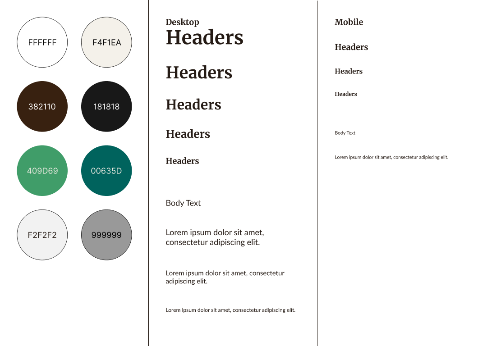

Case Study
The Overview
Context and Challenge
For this project, I designed and coded an interactive object as part of my coursework in IDM241- Microinteractions. Over 11 weeks, my focus was to create functional and engaging microinteractions. My design process included choosing an interactive section of an existing website, analyzing each microinteraction, ideating improvements, and, finally, coding them.
The interactive element I chose was a book tile from the recommendations page of Goodreads. The current tile is functional, but there were minor annoyances that I had ideas to improve on.

Pictured above are two spaces where I chose to improve on. The first is the “saving” state of the button. From the jump, I planned to completely remove this state. The “saving” state of this button is unnecessary because it causes the user to wait longer than needed for a quick action. The second area of improvement was the star rating. Once the user selects a rating, there is no way of going back and removing their rating. I decided to add a way for the user to remove their rating in my design. This will give the user confidence in their actions, knowing that they can take their action back.
The results reflect my goal of creating a functional, user-friendly interface while adhering to best practices in user experience design. By exploring these key components, I gained valuable insights into the intricacies of designing intuitive and functional interactions. This project showed not only the technical aspects behind microinteractions but also the reasoning behind each design decision.
Process and Insight
As mentioned earlier, I chose to analyze and improve on a book tile from the Goodreads recommendations page. The next step was the alpha description. In this, I focused on one existing button (the “Want to Read” button) and dove into analyzing and describing its triggers, rules, feedback, loops, and modes. I was introduced to understanding how complex a single interactive element could be, even if it looked simple on the surface.
After the Alpha Description, I moved on to the Alpha Build. In this phase, I coded the “Want to Read” button and its interactions. This was my first time coding a microinteraction, and I learned a lot about the intricacies of coding a single element. I used HTML and CSS to create a button that changes color when hovered over and clicked. I also applied JavaScript to change the text of the button when clicked. This was a challenging but rewarding experience that taught me a lot about the technical side of microinteractions.
After finishing the Alpha portion of my project I started to plan what my improvements would look like. My goal was to create a functional, user-friendly interface. The Goodreads website already has a brand with good color contrast, so I decided to maintain the branding. I extracted their design system from their page and built a design system.
After the Alpha Build, I moved on to the Beta Description. In this phase, I analyzed and described the “Want to Read” button, star rating, and "Not Interested" button's feedback and loops. I also ideated improvements for the button, such as removing the “saving” state and a way to remove the rating. This phase was crucial in understanding the importance of feedback and loops in microinteractions. I learned that feedback is essential for guiding users through an interface and that loops are necessary for creating a seamless user experience.
After the Beta Description, I moved on to the Beta Build. In this phase, I coded the improvements I had ideated in the Beta Description. I used HTML, CSS, and JavaScript to create a button that changes color when hovered over and clicked. I also applied JavaScript to change the text of the button when clicked. This was a challenging but rewarding experience that taught me a lot about the technical side of microinteractions.
For one final time, I wrote a Final Description. I prototyped the complete Book Tile in FIgma. I then described each microinteraction in depth.
Finally, I coded the final project.
The Solution
To address the identified issues with the Goodreads book tile, I implemented several key improvements designed to enhance the user experience while maintaining the platform's established branding and design language.
- Removal of the "Saving" State
- Introduction of a Rating Reset Option
- Preservation of Goodreads Branding
The original "Want to Read" button included a "saving" state, which unnecessarily delayed the user's interaction. I removed this state entirely, allowing for a seamless and immediate response when the button is clicked. This change reduced friction and made the interaction feel faster and more intuitive.
The lack of an option to remove a star rating posed a usability challenge. I added a new feature that allows users to deselect their rating, empowering them to correct mistakes or change their minds without feeling locked into a decision. This improvement supports user confidence and aligns with best practices for reversible actions in UX design.
To ensure consistency with Goodreads' existing design system, I extracted and adhered to their color palette, typography, and button styles. This attention to detail ensured that my redesigned elements felt native to the platform, maintaining a cohesive visual identity.
The final solution combines intuitive interaction patterns, thoughtful improvements, and seamless integration with the existing platform design. Together, these enhancements create a user-friendly experience that prioritizes clarity, efficiency, and user empowerment.
The Results